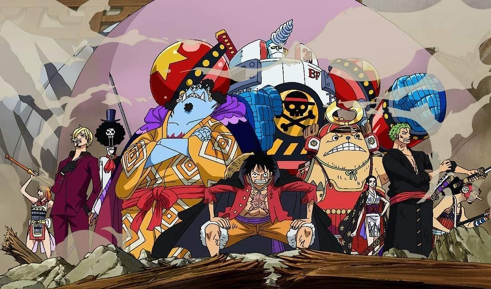

ANIMES
One piece
A série foca em Monkey D. Luffy, um jovem feito de borracha, que, inspirado em seu ídolo de infância, o poderoso pirata Shanks, o Ruivo, parte em uma jornada do mar do East Blue para encontrar o tesouro mítico, o One Piece, e proclamar-se o Rei dos Piratas. Em um esforço para organizar sua própria tripulação, os Piratas do Chapéu de Palha, Luffy resgata e faz amizade com um caçador de piratas e espadachim chamado Roronoa Zoro, e eles partem em busca do tesouro titular. Eles são acompanhados em sua jornada por Nami, uma ladra e navegadora obcecada por dinheiro; Usopp, um franco-atirador e mentiroso compulsivo; e Sanji, um cozinheiro amoroso mas cavalheiresco. Eles adquirem um navio, o Going Merry, e se envolvem em confrontos com notórios piratas do East Blue. Enquanto Luffy e sua equipe partem em suas aventuras, outros se juntam à equipe mais tarde na série, incluindo Tony Tony Chopper, um médico de renas antropomorfizado; Nico Robin, arqueóloga e ex-assassina da Baroque Works; Franky, um construtor naval ciborgue; Brook, um músico esqueleto e espadachim; e Jimbei, um timoneiro homem-peixe e ex-membro dos Sete Corsários do Mar.
Uma vez que o Going Merry está danificado além do reparo, Franky constrói um novo navio para os Piratas do Chapéu de Palha, o Thousand Sunny. Juntos, eles encontram outros piratas, caçadores de recompensas, organizações criminosas, revolucionários, agentes secretos e soldados do corrupto Governo Mundial, e vários outros amigos e inimigos, enquanto navegam pelos mares em busca de seus sonhos
LINK DO VIDEO NO YOUTUBE
Full Metal Alchemist

Resumo: Edward e Alphonse Elric são dois irmãos alquimistas procurando o catalisador lendário chamado pedra filosofal, um objeto poderoso que lhes permite restaurar seus corpos (que foram perdidos numa tentativa de trazer sua mãe de volta à vida pelo uso da alquimia).
LINK DO VIDEO NO YOUTUBE
Naruto

Resumo: História de Naruto Uzumaki, um jovem ninja que constantemente procura por reconhecimento e sonha em se tornar Hokage, o ninja líder de sua vila. A história é dividida em duas partes, a primeira parte se passa nos anos da pré-adolescência de Naruto, e a segunda parte se passa em sua adolescência.
LINK DO VIDEO NO YOUTUBE